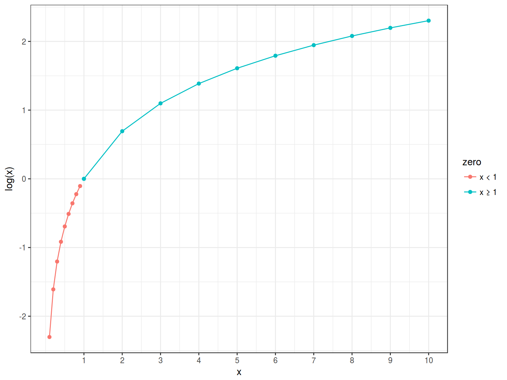

20.04.2017
Variable types
What we achieved:
Today:
Logistic or logit regression was developed in [Cox 1958]. It is a regression model wich predicts binary dependent variable using any number of variables of any type.
What we need?
\[\underbrace{y_i}_{[-\infty, +\infty]}=\underbrace{\mbox{β}_0+\mbox{β}_1\cdot x_1+\mbox{β}_2\cdot x_2 + \dots +\mbox{β}_k\cdot x_k +\mbox{ε}_i}_{[-\infty, +\infty]}\]
But in our case \(y\) is a binary variable.
\[P(y) = \frac{\mbox{# successes}}{\mbox{# failures} + \mbox{# successes}}; P(y) \in [0, 1]\]
\[odds(y) = \frac{P(y)}{1-P(y)} = \frac{\mbox{P(successes)}}{\mbox{P(failures)}} = \frac{\mbox{# successes}}{\mbox{# failures}}; odds(y) \in [0, +\infty]\]
\[log(odds(y)) \in [-\infty, +\infty]\]
